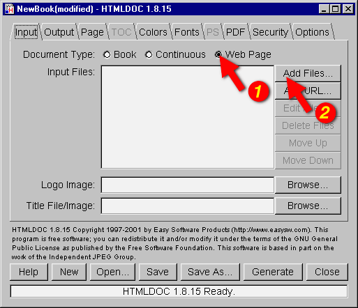
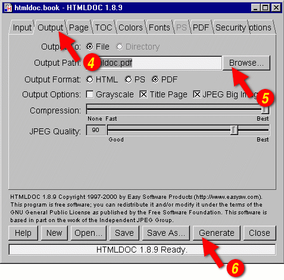

Chapter 2 - Getting Started
This chapter describes how to start HTMLDOC and convert HTML files into PostScript and PDF files.
| Note:
HTMLDOC currently does not support HTML 4.0
features such as stylesheets or the |
Starting HTMLDOC
For UNIX type:
% htmldoc ENTER
For Windows click:
Start Menu->All Programs->HTMLDOC->HTMLDOC
For Linux click:
Applications Menu->Office->HTMLDOC
For MacOS X click:
Applications Folder->HTMLDOC
For Solaris click:
Applications Window->ESP->HTMLDOC
Choosing a HTML File
The HTMLDOC window (Figure 2-1) shows the list of input files that will be converted. Start by clicking on the Web Page radio button (1) to specify that you will be converting a HTML web page file.

Figure 2-1 - The HTMLDOC Window
Then choose a file for conversion by clicking on the Add Files... button (2). When the file chooser dialog appears (Figure 2-2), double-click on the HTML file (3) you wish to convert from the list of files. If you don't see the file you wish to add, then double click on the folder with ../ (4) to see more file options.

Figure 2-2 - The File Chooser Dialog
Setting the Output File
You've chosen your HTML files to be converted, now you need to save your file(s) somewhere. The output file is where you would do that. Click on the Output tab (5) to set the output file (Figure 2-3). You can either type the name of the output file into the Output Path field or click on the Browse... button (6) to find an acceptable output location. Clicking on browse allows you to put the new file in a specific folder for easy retrieval. When you click on a folder you will notice that the filename area and text is highlighted. Click a few times at the end of the file name path and add a slash (/) and the name of the new file. If you don't see the folder you want to put your document in, double click on the folder with ../ after it.

Figure 2-3 - The Output Tab
Generating the Document
You can generate the document by clicking on the Generate button (7) at the bottom of the HTMLDOC window. When the conversion is completed you can open the PDF file that is produced using Adobe Acrobat Reader or any other PDF viewing application.
| Note:
The Open button at the bottom of the HTMLDOC GUI Open Window will not open the generated document for viewing. You will learn about the Open button in later chapters. |